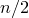
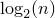
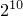

If you have data in a computer but you don't have a search technique, you have to manually find information. This is like a phonebook: we search with our eyes and hands. But if the data is in a computer, why bother? We just ask the computer to search for us.
Imagine if the phonebook was not sorted, but just a random collection of names and phone numbers. You'd have to look from page 1 to find the phone number you want. So, somehow, sorting your data first helps you search more efficiently. The same is true in computer "phonebooks" (arrays, for example). The first search we will look at does not require that the data be sorted but does require we search the hard way (start with page 1). The second search takes advantage of sorted data to perform the search much faster.
Sequential search is as simple as it gets. If we have an array of
data, call it arr (of size size), then sequential search just looks at
every element in arr until either (1) it finds what it was asked to
find or (2) it runs out of elements. Here is the code for sequential
search (for an array of strings):
// this function returns the position of 'target' in the array // if it is found; if it is not found, this function returns -1 int sequentialSearch(string arr[], int size, string target) { for(int i = 0; i < size; i++) { if(arr[i] == target) { return i; } } return -1; }
It should be obvious then that (1) sequential search is the slowest search (if there are elements in the array then, on average, sequential search looks at  elements) and (2) the array need not be sorted.
Back to the phonebook analogy. Imagine somebody gives you a portion of a phonebook. The book is like a sorted array of names (sorted by last name). We are considering just a portion of the phonebook because not all sorted arrays start at letter A and end at letter Z. Perhaps our book has last names between B and H.
How do we most efficiently search for a particular name in this book? We perform a binary search:
Is it clear that this is a binary search? Binary means two. So a binary search is a "two"-search. If we don't find our target in the array (or the phonebook), we cut the array or book in half and search in that half.
While sequential search required, on average, looking at elements (where is the size of the array, or the number of names in a phonebook), binary search requires, on average, looking at  elements. This means that if an array has size 1024 (which is ), then sequential search requires about 500 comparisons while binary search requires about 10. This is a substantial improvement.
Note, however, that binary search requires that the array be sorted. Sorting also takes time, and that must be considered when you plan to use binary search.
Here is the code for binary search (searching an array of
integers). Note that top and bottom keep track of the highest and
lowest indexes (respectively) of the "half" of the array that we are
looking at at any particular iteration.
// this function returns the position of 'target' in the array // if it is found; if it is not found, this function returns -1; // this function requires that 'arr' be sorted (ascending) int binarySearch(double arr[], int size, double target) { int top = (size - 1); int bottom = 0; int middle; while(true) { // if there is only one element to look at, // it is either the target or it is not if(top == bottom) { // we found the target if(arr[top] == target) { return top; } // we did not find the target, // and we have nowhere else to look; // so the target is not in the array else { return -1; } } // otherwise, if top != bottom, then we can split // the array in half else { middle = bottom + (top - bottom) / 2; // check if arr[middle] is our target if(arr[middle] == target) { return middle; } // else if middle is larger, throw out top half of array else if(arr[middle] > target) { // we "throw out" the top half by changing our bounds top = middle; } // otherwise middle is smaller than target else { // we "throw out" the bottom half by changing our bounds // if there are only two elements left, then // middle == bottom (because top-bottom/2 == 0), // so we need to increase bottom by 1; // otherwise, we'll never move forward if(middle == bottom) { bottom = bottom + 1; } else { bottom = middle; } } } // then the loop repeats with our new bounds } }
Here is a complete example, this time searching through an array of doubles.
#include <iostream> #include <cmath> using namespace std; // this function returns the position of 'target' in the array // if it is found; if it is not found, this function returns -1; // this function requires that 'arr' be sorted (ascending) int binarySearch(double arr[], int size, double target) { int top = (size - 1); int bottom = 0; int middle; while(true) { cout << "bottom: " << bottom << ", top: " << top << endl; // if there is only one element to look at, // it is either the target or it is not if(top == bottom) { // we found the target if(arr[top] < (target + 0.000001) && arr[top] > (target - 0.000001)) { return top; } // we did not find the target, // and we have nowhere else to look; // so the target is not in the array else { return -1; } } // otherwise, if top != bottom, then we can split // the array in half else { middle = bottom + (top - bottom) / 2; // check if arr[middle] is our target if(arr[middle] < (target + 0.000001) && arr[middle] > (target - 0.000001)) { return middle; } // else if middle is larger, throw out top half of array else if(arr[middle] > target) { // we "throw out" the top half by changing our bounds top = middle; } // otherwise middle is smaller than target else { // we "throw out" the bottom half by changing our bounds // if there are only two elements left, then // middle == bottom (because top-bottom/2 == 0), // so we need to increase bottom by 1; // otherwise, we'll never move forward if(middle == bottom) { bottom = bottom + 1; } else { bottom = middle; } } } // then the loop repeats with our new bounds } } int main() { double arr[100000]; for(int i = 0; i < 100000; i++) { arr[i] = sqrt(i); } int pos = binarySearch(arr, 100000, 98); cout << pos << endl; }
Result:
bottom: 0, top: 99999 bottom: 0, top: 49999 bottom: 0, top: 24999 bottom: 0, top: 12499 bottom: 6249, top: 12499 bottom: 9374, top: 12499 bottom: 9374, top: 10936 bottom: 9374, top: 10155 bottom: 9374, top: 9764 bottom: 9569, top: 9764 bottom: 9569, top: 9666 bottom: 9569, top: 9617 bottom: 9593, top: 9617 bottom: 9593, top: 9605 bottom: 9599, top: 9605 bottom: 9602, top: 9605 bottom: 9603, top: 9605 9604
If we change this line in main():
int pos = binarySearch(arr, 100000, 98);
to:
int pos = binarySearch(arr, 100000, 387.30);
then our output is:
bottom: 0, top: 99999 bottom: 49999, top: 99999 bottom: 74999, top: 99999 bottom: 87499, top: 99999 bottom: 93749, top: 99999 bottom: 96874, top: 99999 bottom: 98436, top: 99999 bottom: 99217, top: 99999 bottom: 99608, top: 99999 bottom: 99803, top: 99999 bottom: 99901, top: 99999 bottom: 99950, top: 99999 bottom: 99974, top: 99999 bottom: 99986, top: 99999 bottom: 99992, top: 99999 bottom: 99995, top: 99999 bottom: 99997, top: 99999 bottom: 99998, top: 99999 bottom: 99999, top: 99999 -1
Note that it took 19 comparisons (19 iterations of the while() loop
inside the search function). Since our array has 100000 elements, the
most comparisons that a binary search would require is
. The extra two lines of
output occurred because of how we wrote our code. Our code will always
show two extra lines of output.